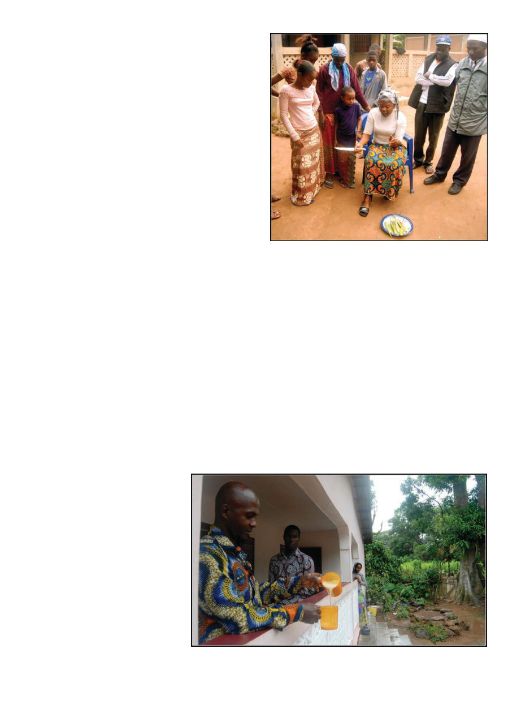

January 2020
105
but my translator, Monsieur Damba,
refused to translate anything that
seemed to be promoting traditional
hives.
I was also told there were some
“duh-dunt” hives some French vol-
unteers had left years ago. This was a
mystery to me until I finally saw these
weathered old square wooden hives in
the bush, and I realized the word they
were saying was “Dadant.” Dadant
was once a common alternative set of
dimensions for a hive (originally 10.5”
x 19” though there were a few modi-
fied versions). Because I didn’t have a
measuring tool at hand I was unable
to ascertain whether these were actual
Dadant style hives, hives bought orig-
inally from the Dadant company, or
perhaps the word “dadant” was being
used generically for frame hives (the
original Charles Dadant was a French
emigrant to the U.S. and popularized
frame hives in France).
In Guinea there are almost no frame
hives because they lack access to the
precision-cut lumber or extractors. As
with similar places in Africa, the in-
tention is to get people into bee man-
agement through KTB hives before
trying to move on to frame hives.
Questioning of the participants in-
dicates they get 33-55 lbs. honey per
Kenyan (KTB) and 11-22 lbs. per tra-
ditional hive annually. They get be-
tween $3.26 and $4.37 per lb. for their
honey, so a single KTB will earn them
$107.58 - $240.35 a year. With a per
capita GDP of just $742.45, that means
even a single hive can make a big dif-
ference, and we all know once you get
started you don’t stay with only one
hive for long.
FAPI has two trainers on staff, a
young man named Khalidou and a
young woman named Aissatou. Both
have graduated from a local agricul-
tural college. Aissatou’s inspiring ex-
ample I believe helps combat gender
expectations in the country, and Kha-
lidou is a very good trainer. Addition-
ally, seeing their familiar faces at all
three projects gave me a comforting
sense of continuity.
Khalidou teaches the others to open
the hives away from themselves “in
case there’s a reptile,” which, I as-
sume there’s a story here. (Another
unusual pest I was informed about:
“They have another problem in the
mountains — chimpanzees.”) Khali-
dou skillfully narrates to the others
what he’s doing and why, in the local
language. I interject when I see some-
thing we haven’t discussed yet, since
Khalidou always has the basics well
in hand, and what I say must be trans-
lated. Often the topbar width is off,
causing cross-combing. Fortunately I
have a high tech measuring tool I use
on any suspect topbars — they need
to be 32mm for African bees, which
happens to be the exact width of a
Coca-Cola or Fanta bottle cap. Length
of topbars is less crucial but I keep
telling them they should standardize
them so they’re interchangable be-
tween hives.
The African bees (Apis mellifera
adonsonii in this case) scuttle about the
frames more than European bees, and
often after going through all the frames
in a topbar nearly all the bees are in a
cluster underneath the hive (while not
technically correct, I inevitably end
up referring to a comb attached to a
topbar as a “frame,” out of habit and
because neither “comb” nor “topbar”
alone I feel adequately conveys spe-
cifically a comb attached to a topbar).
Due to high absconding behavior one
just expects the bees to leave in dearth
seasons and return when conditions
are good. Swarm capturing is haz-
ardous because it’s as likely to be a
bad tempered absconded colony as
a docile swarm. The bees aren’t usu-
ally terribly aggressive, and we can
usually take our gloves off, though I
wouldn’t mess with them without a
suit and some gloves close at hand, in
case I need them. I can only recall one
occasion where the bees became so
aggressive we all had to spend awhile
walking broad circles through foliage
to lose our angry bee followers before
returning to the village.
On the days we made wax prod-
ucts, the local young women would
suddenly appear like a flock of col-
orful birds, clad in beautiful brightly
patterned dresses. Previously they’ve
FAPI trainer
Aissatou
demonstrates how
to prepare aloe
vera for use in
balms and lotions.
Downtime: Karim makes tea while Khalidou and Fatimata look on.